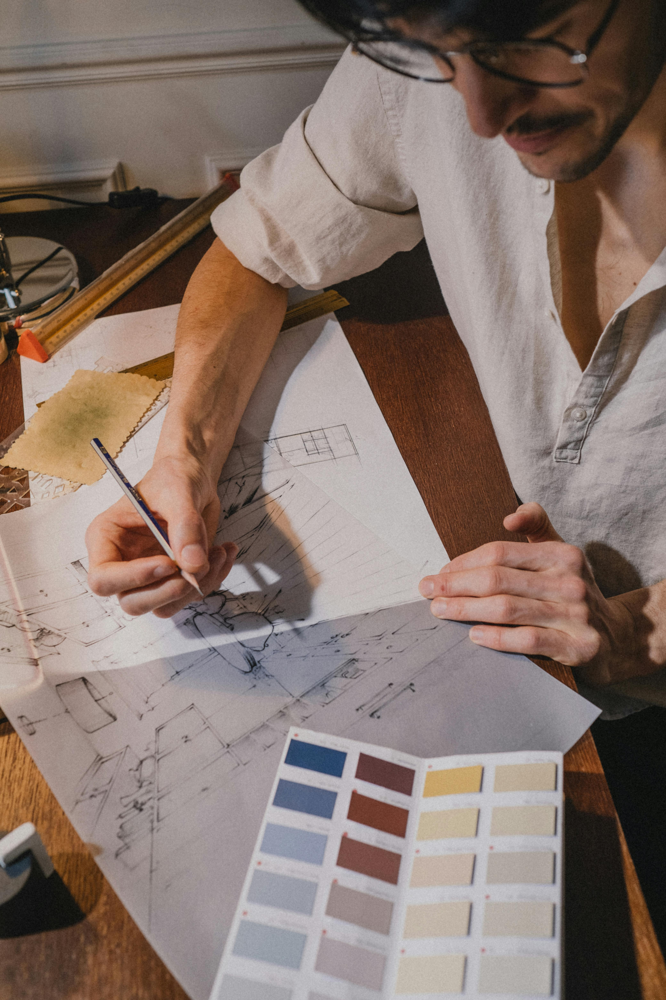

Kompetencer


Hos os får du mange forskellige egenskaber, kvaliteter og råd med dig, når du er en del af vores fællesskab. Her får du alt du skal bruge for at starte din egen virksomhed.
Bliv en del af fællesskabet


Start med at deltage i workshops, hvor du arbejder med idéer, kreativ tænkning og innovation sammen med andre studerende.

Udvikle derefter dine idéer. Her får du mulighed for at arbejde med dine egne idéer uanset erfaring eller faglig baggrund.
Du får også sparring og feedback fra underviserer, mentorer og studerende, som hjælper med at eksikvere dine idéer.

Til sidst kan du gå herfra med nye kompetencer, erfaringer og et netværk, som du kan bruge i dit studie og i din iværksætterrejse.